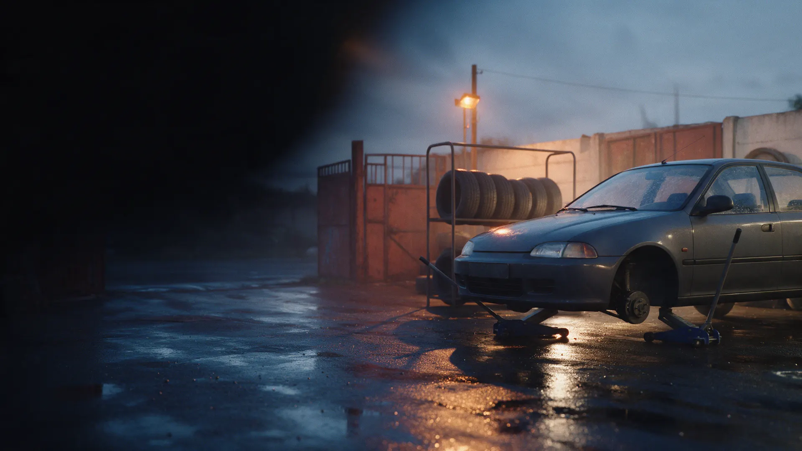
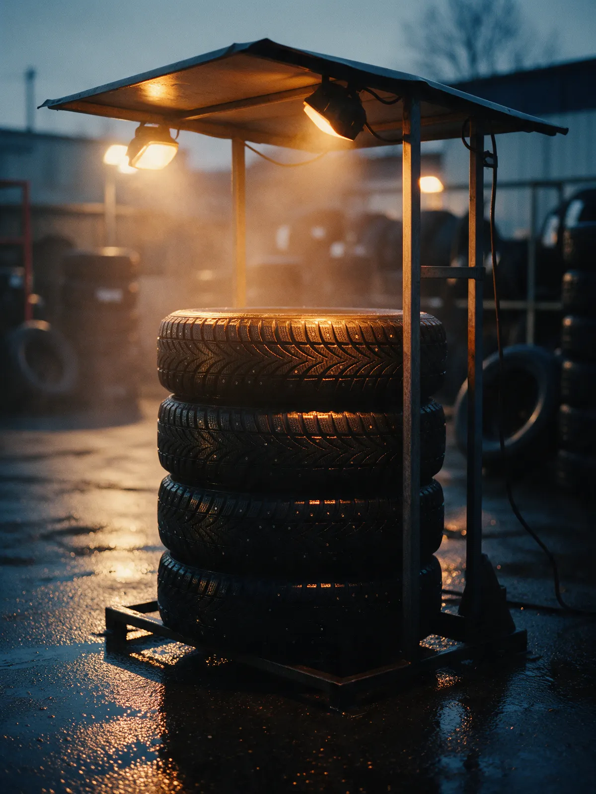
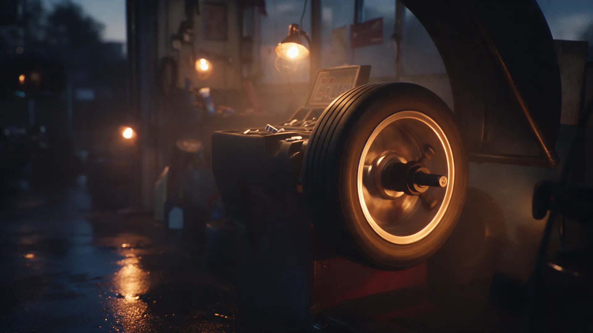
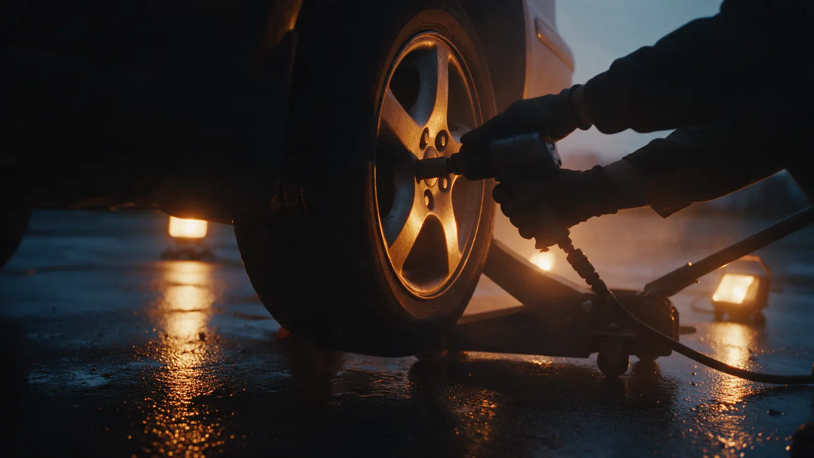

Шиномонтаж · Москва, Печатники
Шиномонтаж в Москве – переобуем за 15 минут
Печатники, Шоссейная, 78А. Работаем в несколько рук и принимаем две машины сразу. Лишних работ не предлагаем.

- Каждый день с 08:30 до 20:00
- Сезонное хранение шин
- Оплата картой
Цены
Цена зависит от радиуса колеса. Позвоните или напишите – назовём сумму под вашу машину.
Переобувка
- Переобувка комплектаперебортовка и балансировкауточнить
- Комплект на дискахснять и поставитьуточнить
- Мотоциклетные колёсауточнить
Остальное
- Ремонт проколауточнить
- Прокатка дисковуточнить
- Сезонное хранение шинуточнить
Как проходит
- 01
Приезжаете
Шоссейная, 78А: красные ворота, над ними вывеска «Шиномонтаж». Рядом Николо-Перервинский монастырь.
- 02
Машину сразу берут в работу
Несколько мастеров снимают колёса одновременно.
- 03
Перебортовка и балансировка
Каждое колесо проходит балансировочный станок.
- 04
Колёса упакуют в пакеты
Забираете снятый комплект и едете.



За что нас выбирают
Скорость пит-стопа
Так пишут клиенты в отзывах: переобувка комплекта за 10–12 минут.
Берём мотоциклы
Переобуем и отбалансируем мотоциклетные колёса.
Храним шины до сезона
Условия и цену назовём по телефону.
Отзывы с Яндекс.Карт
«Заехал вечером в субботу, машин не было. Ребята вчетвером за 10 минут переобули колёса. Это самая быстрая переобувка моей жизни. Однозначно рекомендую»
Вюгар Г. · 22 ноября 2025
«Название полностью оправдывают, шиномонтаж быстрый, качественный и без навязывания дополнительных услуг.»
Георгий Марков · 4 мая 2025
«Шиномонтаж номер 1. И это так и есть!!! Уже несколько лет переобуваюсь у этих мастеров своего дела. Всё чётко, быстро и аккуратно. Рекламации ни разу не было. Мужчины не очень разговорчивые, но профессионалы.»
Сергей Анчуров · 5 марта 2026
Отзывы с карточки на Яндекс.Картах, без правок.
Контакты
- Адрес
- Шоссейная, 78А, Москва
- Часы
- Каждый день 08:30–20:00
- Телефон
- +7 (985) 450-35-06